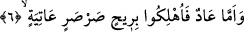
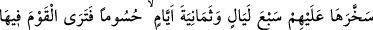
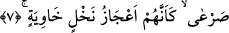

6. Âd kavmi ise, uğultulu, kasıp kavuran bir fırtına ile mahvedildiler.
“Âd kavmi..” Onların yurtları Ahkaf’ta yâni Umman-Hadramut-Yemen arasındaki
kumluk bölgede idi. Âd kavmi de arap kökenli idiler. Yaratılıştan iri yapılı kimselerdi.
En uzun boylu olanları yüz arşın, en kısa olanları altmış, orta boylu olanları ise yüz ile
altmış arşın arası idi. Kafaları kubbe gibi idi. Âd kavminin zaman itibâriyle Semûd
kavminden daha önce yaşadığı hâlde âyette onlardan sonra zikredilmesi, aşırı
sapıklardan bahsedildikten sonra onlardan daha aşırı sapıkların bahsine bir yükselme,
bir geçiş olması içindir.
“Uğultulu, kasıp kavuran bir fırtına ile helâk edildiler.” Âd kavminin helâk edildiği
fırtına batı rüzgarı idi. Bunu Peygamberimiz (s.a.)’in şu hadislerinden anlıyoruz: “Ben
sabâ rüzgarı ile zafere ulaştım. Âd kavmi ise batı rüzgarı ile helâk edildi.” [64]
“Uğultulu” diye tercüme edilen “sarsar” kelimesi esme esnâsında şiddetli ses çıkaran
rüzgar, fırtına demektir. Ya da “sarsar” soğuğu ile bütün bitki ve ekinleri yakan çok
şiddetli soğuk demektir. Çünkü Arapçada “sırr” kelimesi şiddetli soğuk anlamınadır.
Kelimenin ses çıkarmak; şahin, çakırdoğan ve benzeri hayvanların sesi anlamları da
vardır.
Azgın, biçiminde tercüme edilen “âtiyeh” kelimesi, “esme esnâsında haddi ve sınırı
aşan” anlamına gelir. Bu kelime bize şöyle bir tablo çiziyor: Sanki Âd kavmini helâk
eden bu rüzgar, kendisini bir depoda hapseden bekçilerine karşı gelmiş, tüm gücüyle
oradan çıkmaya çalışmış ve bekçiler onu zaptedip tutamamışlar.
Rüzgarlar Mîkâîl’in emri altındadırlar, onun izniyle eser, onun izniyle kesilirler.
Mikâîl’in -tıpkı ölüm meleği Azrâîl’in yardımcıları olduğu gibi- yardımcıları vardır.
Rivâyet olunduğuna göre önceleri rüzgarlar belli bir mikdarda esiyorlardı. Ancak
Allah’ın Âd kavmine gazabı şiddetlenince üzerlerine artık kontrolden çıkmış şiddetli
bir rüzgar esmeye başladı. Bu nedenle de o rüzgara “atiye” ismi verildi.
Âyet-i kerîmeyi şu şekilde anlamak da mümkündür: Âd kavmi uğultulu, kendilerine
doğru gelen bir fırtına ile helâk edildiler. Onlar o fırtınayı, bir binânın arkasına
saklanmak, bir dağa sığınmak veya bir çukura gizlenmek gibi bir yolla savuşturmaya
imkân bulamadılar. Çünkü bu fırtına onları bulundukları ve gizlendikleri yerden söküp
alıyor ve helâk ediyordu.
7. Allah onu, ardarda yedi gece, sekiz gün onların üzerine musallat etti. Öyle ki